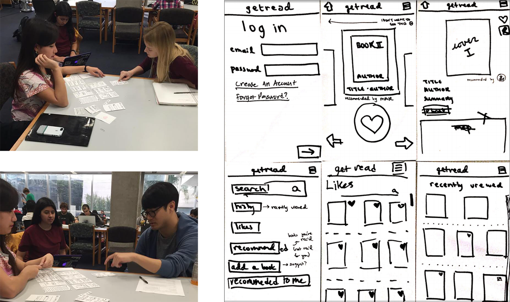
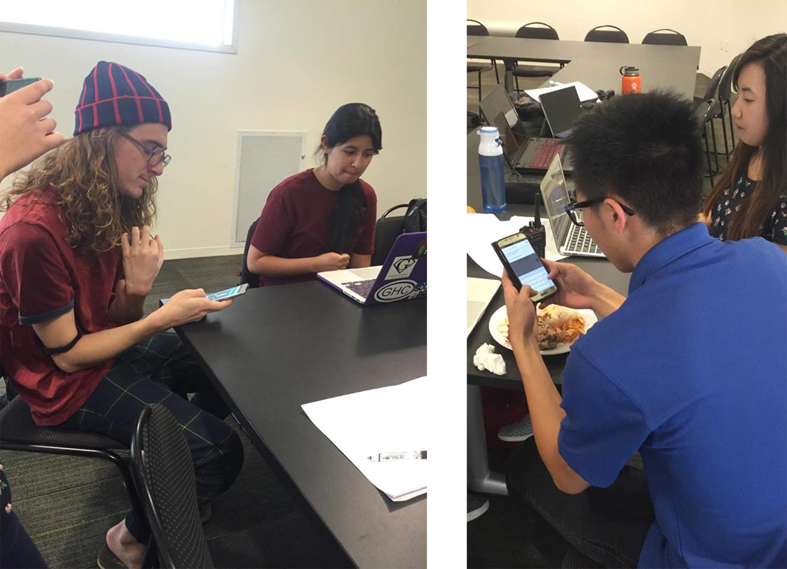

The Need
geisel can be pretty daunting
This project was actually the result of a course provided at UCSD. The design studio I was in focused on "Spreading Stories and Empathy". Our task was to create a mobile app that users could utilize to make them better (more empathetic) storytellers. Along with our studio brief my team and I drew inspiration from UCSD's Geisel library and realized that there are a lot of great books inside that many will never read.
Our Solution
GetRead makes it easy to harness the connecting power of books by making it easy to share them and giving users a visually salient track of their relationships.

Prototyping!
paper prototypes!
During our early stages, we conducted tests using paper prototypes of what we envisioned our app to be. The prototypes were a success because we found out that our first design was not really what we were aiming for, leading us to craft up more iterations of prototypes and tests until we were satisfied.
We created paper prototypes of our apps because they are,fast, cheap, and look similar to our app. We gained valuable heuristic evaluations from these from our peers and incorporated them into our final designs.
High-Fidelity Prototyping
After we worked out the main features and feel of our app through paper prototyping, it was my task as one of the designers to create a high-fidelity mock up of what our app could look like. This hi-fi prototype was not the final image/flow of our app but a guideline for us to use as we coded.
Interactive mock-up!
FeedBack
After our inital round of testing (prototypes) we found interesting things that helped us move on to our next design:
1. We need a more intuitive home screen
2. Preview of a book before you move to the next one would be nice
3. Recommend button was not clear
4. We need more present navigation bar Testing
This feedback helped us focus on the core of our app: being able to recommend books to friends
some of our friends testing the app